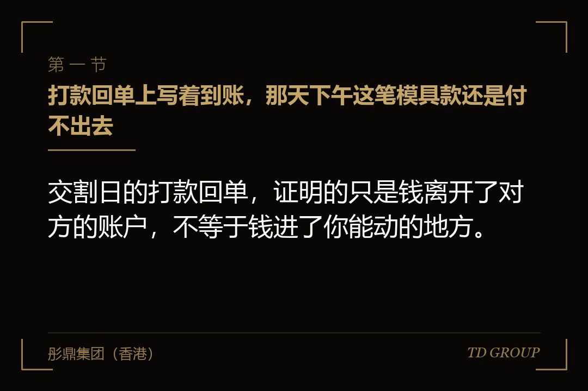
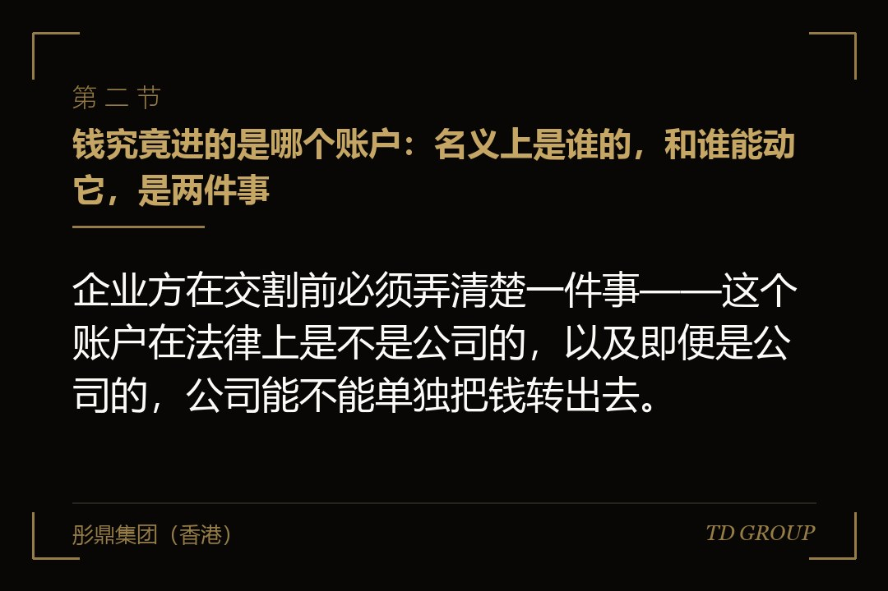
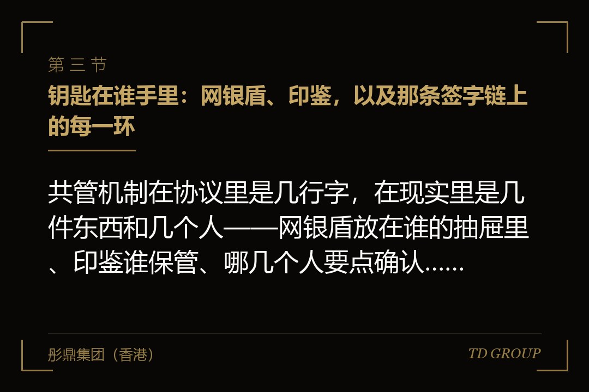

一、打款回单上写着到账，那天下午这笔模具款还是付不出去

结论先行：交割日的打款回单，证明的只是钱离开了对方的账户，不等于钱进了你能动的地方。一家做汽车零部件的企业在某一轮融资交割当天上午收到了回单，创始人把截图发到了管理层群里。当天下午，采购部门要付一笔模具款给长期合作的供应商，金额不大，合同约定的付款期限只剩两天。财务在网银上提交之后，付款状态一直停在"待授权"。
原因是这笔钱进的不是公司原来的基本户，而是为本轮新开的一个专用账户，账户预留的印鉴里多了一枚投资方指定的章，网银的授权环节也多了一个人——投资方委派的那位投后经理。
而那位当天在另一个城市，手机上的授权应用要连公司内网才能用；更麻烦的是，他这一侧还有自己的流程，超过约定金额的付款要先由他所在机构的财务负责人签一道字。这笔模具款从提交到最终执行，用掉了六个工作日。供应商那边按合同扣了逾期的部分，金额不大，但从那天起，这家企业的付款节奏就被改了。
创始人后来复盘时提到另一件当天才弄明白的事：协议里写的本轮投资总额，与实际到账的金额对不上，差着一块。他起初以为那是"尾款"，会在一两个月后补上。
逐条对完协议才发现那不是尾款——那是预留款，被扣在一个双方共管的托管账户里，要等尽职调查中列明的几件历史事项处理完，按约定的条件分笔释放；如果其中某件事最终产生了损失，这笔钱可以直接被用于抵扣，压根不会回到公司。而协议里对"处理完"的表述是"经投资方书面确认"。
这两件事——账户能不能动、有多少钱压根还没进来——都不在估值那一行里，也很少在条款清单谈判的主战场上出现。它们通常出现在交割文件与账户共管协议里，那些文件往往在临交割前几天才成稿，那时企业方的精力已经被尽职调查的补充材料耗得差不多了。
本文讲的就是这两件事的机制本身。
有几件相邻的事此处不展开：本轮资金能用于哪些用途、负面清单怎么列、违反用途约定会连着掉哪几张牌，以及共管的额度与响应时限那几项旋钮具体怎么调，是讲资金用途监督时另有展开的话题；款项按里程碑分几批到账、每一批的触发条件怎么设，与预留款性质不同，也不在这里说；预留款被动用之后赔偿的范围怎么界定、责任上限怎么设，是另外的话题。
二、钱究竟进的是哪个账户：名义上是谁的，和谁能动它，是两件事

结论先行：企业方在交割前必须弄清楚一件事——这个账户在法律上是不是公司的，以及即便是公司的，公司能不能单独把钱转出去。这两个问题的答案组合起来，才是这笔钱的真实状态。
常见的落款方式大致有几种。类型一是在企业自有的基本户或者一般户上加设联签，账户本身没变，只是预留印鉴与网银授权环节多了一方。这种方式对企业最友好，但它有一个隐患：如果协议没有把共管的范围写死，联签实际上会覆盖这个账户上的全部资金，包括企业自己的经营性收款。一旦本轮资金与经营性收款混在同一个账户里，企业的日常收付就整体落入了对方的确认流程。
类型二是为本轮新开一个专用账户，本轮款项单独存放，与经营账户分开。账户仍在公司名下，共管只作用于这一个账户。多数交易走的是这一种，它也是企业方应当争取的形态——因为它把共管的边界从"公司的钱"收缩到了"本轮这笔钱"。
类型三是开立在公司以外主体名下的托管账户。这类账户可能由双方共同认可的第三方作为账户名义人，也可能是开户银行按共管协议设立的监管专户，账户的处分权被协议锁死，任何一笔划出都要双方共同指令。预留款最常用的就是这一种。
类型四严格来说不算账户安排：对价中的一部分不进任何托管账户，而是约定在满足某些条件后由投资方直接支付。经济效果与预留款接近，但法律位置不同——钱始终在对方手里，企业方在这段时间里对这笔钱没有任何形式的控制，一旦对方自身出现资金安排上的变化，企业方要拿回来的路径也不一样。
一家做商用厨房设备的企业在这件事上吃过一次亏。它这一轮的预留款进的是类型三，账户名义人不是公司。
创始人一直把这笔钱当成公司的现金，年度审计时才发现要专门讨论一个问题：这笔款项在公司报表上究竟怎么列报，取决于公司对它是否具有控制权，而按共管协议的约定，公司单方面无权支配。讨论的结果直接影响了公司当期的货币资金余额。
而那一年这家企业正在和一家银行谈流动资金授信，银行看的正是账面的现金状况与短期偿付能力，谈下来的额度比公司原先测算的低了一截。这件事没有任何人做错，只是企业方在交割时按"到账总额"做了后续一整年的资金规划，而实际能调度的金额是另一个数。
所以交割前要落到纸面上的问题很具体：这个账户的开户名是谁；账号是多少，能不能拿到开户回单；账户里除了本轮款项还会不会进别的钱；共管覆盖的是这一个账户还是公司的全部账户；共管期间账户产生的利息归谁；账户的销户需要谁同意、走什么流程。这些问题在交割文件定稿之前问，改一句话就能解决；交割之后再问，就要走补充协议。
三、钥匙在谁手里：网银盾、印鉴，以及那条签字链上的每一环

结论先行：共管机制在协议里是几行字，在现实里是几件东西和几个人——网银盾放在谁的抽屉里、印鉴谁保管、哪几个人要点确认，机制会不会卡住，取决于这些具体安排，而不取决于条款写得多完备。
一笔付款要走出共管账户，通常要经过这样一条链：企业内部的经办人在网银端发起，企业内部的复核人确认，企业方的授权人（多为财务负责人或法定代表人）用自己的凭证授权，投资方委派人员用他那一侧的凭证确认，最后由银行按共管协议执行。链条上每多一环，就多一份"这个人这会儿在不在"的不确定性。而这五环里，企业方能自己安排的只有前三环。
企业方在交割清单上应当逐项确认的物件包括：本轮账户的网银盾一共发了几个、分别在谁手里、丢失或损坏后补办要多久；是否启用了动态口令或者手机端授权，那个应用装在谁的手机上、换手机怎么办；账户预留印鉴由几枚章组成、分别由谁保管、是否与公司其他账户的预留印鉴混用；法定代表人章与财务专用章是不是分开存放；如果投资方要求预留它的一枚章，那枚章由谁携带、异地用印怎么处理。这些听着琐碎，可一笔款卡住的时候，卡住它的往往就是这些琐碎的东西。
一家做光伏支架的企业遇到的正是人的问题。它那一轮的共管安排里，投资方委派的确认人是一位投后经理。交割后第五个月，那位经理离职了。
按协议对方应当书面通知更换并办理凭证变更，对方也确实通知了，但银行这一侧要求新任确认人本人到开户行柜台面签并领取新的网银盾，而新任那位常驻在另一个城市，加上双方内部各自的用印流程，整件事办了十四个自然日。这十四天里，这家企业所有超过约定金额的付款都发不出去。
它当时正处在一个交货高峰，几家原材料供应商的账期都到了。最后是企业方以自有资金先行垫付，而这笔垫付本身又要在下个月的资金使用报告里单独解释一遍。
从这件事里能提炼出企业方在交割文件里应当写进去的几条具体安排：对方须同时指定不少于两名有效确认人并各自持有可用凭证，其中一人不可用时由另一人处理；对方人员发生变更的，应在变更生效前完成凭证交接，交接完成之前原确认人的权限不得先行注销；因对方凭证或人员原因导致付款无法执行的，企业方在履行了提交义务之后不承担由此产生的逾期责任。最后这一条尤其值得争——它未必能让钱早一天付出去，但它把违约风险从企业这一侧移开了。
还有一件事值得单独提：工资、社保公积金、税费这三类付款，应当在共管协议里明确列为不需要对方确认的事项，或者设定一个独立的、金额充足的免审批额度。理由很直白——这三类款项有法定的时点，晚一天产生的后果不是商业上的不快，而是滞纳与合规记录。这一条在多数投资方那里并不难谈，因为对方也不希望被投企业因为这类事情留下瑕疵，但如果协议里没写，执行时就要一次次去沟通。
四、日常经营的节奏是怎么被改掉的
结论先行：共管带来的成本，不是某一笔付款晚了几天，而是企业的整个采购与用款习惯被迫改成另一套，而那套习惯往往比原来贵。
一家做调味品的企业提供了很典型的一组变化。它的原料以农产品为主，有明显的采购窗口：每年秋季集中采购一批，价格在窗口期内每周都在动，供应商对现款现货给的折扣，与账期三十天的价格差着几个点。这家企业过去的做法是采购负责人盯着行情，看到合适的价格当天定、当天付。
共管安排落地之后，一笔超过约定金额的付款从提交到执行稳定需要三到五个工作日，于是采购部门只能改成提前一周申请、批量报批。
改完之后有两个后果：其一是当年秋季那一批原料的综合采购价，比前一年按同样策略测算的结果高出若干个点；其二是为了保证批量报批的额度够用，公司在账上多留了一笔平时不需要留的备用资金。
第二个后果比前面那个更值得说。共管机制不只是让付款变慢，它还会倒逼企业提高账面上的资金冗余——因为付款不再是随时可以做的动作，企业就必须为"万一要临时付"留出缓冲，而这笔缓冲是有机会成本的。这部分成本不会出现在任何一张报表的单独一行上，但它是真实发生的。
还有几种变化在不同企业里反复出现。销售侧的变化：给客户的返利、保证金退还这类付款也在共管范围内，客户体验因此变差，而客户并不关心你的股东是谁。招聘侧的变化：候选人的入职安家费、猎头费的支付要走审批日，个别候选人在等待期里去了别处。供应链侧的变化：一旦供应商摸清了你的付款只在每周固定的两天发生，谈账期时就再也谈不下来更好的条件了——因为对方知道你现在没有"当天付"这张牌可打。
需要说清楚的是，这些代价并不意味着共管安排本身不合理。投资方要求共管，通常有两个真实的理由：本轮的钱是为特定用途投进来的，它需要一个机制确保钱不被挪去别处；以及在存在预留事项的交易里，它需要一笔可以随时抵扣的资金留在可控范围内。
这两个诉求正当，多数情况下也谈不掉。
企业方能做的，是把这套机制调到不打断经营节奏的程度，并且——这一点更重要——在签字之前先按自己公司真实的付款分布算一遍：过去十二个月里，超过拟定额度的付款一共发生了多少笔、集中在哪些月份、其中有多少笔是等不起三到五个工作日的。
这个测算用财务系统里的流水就能做出来，通常半天时间，但它能把"应该没什么影响"这句感觉，换成一张能拿去谈判的表。华尔街彤鼎俱乐部里，企业主在这一项上最常见的说法是，条款清单逐字看过了，公司自己那份付款流水却从没拉出来对过。
五、还有一部分钱压根没进来：预留款是为什么留的
结论先行：预留款不是价格没谈拢，也不是分期打款，它是"价格已经定了，但其中一部分先扣着，等几件说不清楚的事说清楚"。
尽职调查做到后期，双方手上通常会剩下一批"知道有问题、但现在算不清金额"的事项。这类事项有几种典型形态。形态一是已经发生但结果未定的争议：一笔在审的诉讼或者仲裁、一项正在处理中的行政事项。
形态二是历史欠缴：过往年度某些应缴未缴的款项，金额可能能算个大概，但最终认定权不在双方手里。形态三是资产权属未办结：某处经营场所的产权手续还在办、某项核心技术的权属登记还没落到公司名下、某个商标还在转让流程中。形态四是交割前来不及完成的整改：历史上的一些安排需要还原或者清理，交割前只完成了一部分。
这几类事项的共同点是：卖方或者创始人一侧说"应该没事"，买方或者投资方一侧不敢按"没事"来定价。如果一定要在交割前算清楚，交易就要停下来等；如果不管它直接交割，投资方就要承担一个数额不明的风险。预留款就是为了让交易能在这种状态下先做完——把一部分对价扣住，等这些事项各自有了结论，再决定这笔钱是还给企业方，还是用于抵扣实际发生的损失。
一家做建筑幕墙工程的企业走过这个流程。尽职调查发现它三年前完工的一个项目存在质量争议，业主方已经提起仲裁，请求的金额不小，而案子那时刚进入举证阶段。
双方最后的处理方式是：本轮对价中按约定比例扣留一笔，存入双方共管的托管账户，等仲裁有了生效结论之后处理——若企业方需要承担赔付，从这笔钱里先行支付，不足部分另行处理；若企业方不承担或者赔付金额低于扣留金额，剩余部分在结论生效后的约定期限内划回企业。这个安排让交割没有被那个案子拖住，这是它的价值所在。
企业方在这一节要建立的头一个认识是：预留款不是对方在压价。压价是把总对价改小，预留款是总对价不变、支付时点后移并附条件。这两者在谈判上的应对方式完全不同——面对压价，你要论证公司值这个钱；面对预留款，你要论证的是那件事的风险边界在哪里、以及怎么让这笔钱按可验证的条件早点回来。把预留款当成压价来吵，通常吵不出结果，因为对方要的不是便宜，是确定性。
第二个认识是：预留款的金额应当与它对应的那件事的风险敞口挂钩，而不是与交易总额挂钩。如果只有一件在审的争议，那么扣留的金额就应当围绕那件争议可能的赔付上限来谈，而不是接受一个按总对价计算的笼统比例。
同理，如果有三件事，就应当尽量做成三笔各自独立的预留，而不是一个大盘子——大盘子的问题在下一节会讲。至于这笔钱被动用之后，赔偿的范围怎么界定、责任上限与免赔起点怎么设、企业方与创始人个人各自承担到什么程度，是另外的话题，此处不展开。
六、怎么把这笔钱拿回来：释放条件、判断权与争议路径
结论先行：预留款条款里真正要争的不是金额，是释放条件的可验证性——条件写成"经对方书面确认"，这笔钱什么时候回来就完全不由你决定。
一家做印染面料的企业在这上面付了一段很长的时间成本。它的预留款对应的是一项环保整改事项，协议约定的释放条件是"相关整改完成并经投资方书面确认后释放"。企业方在交割后的第四个月就完成了整改，主管部门也出具了验收意见。
但对方在这期间做了一次投后团队调整，接手的人要重新看一遍这件事，要求补充材料，材料给过去之后又赶上对方内部的年度流程。那份书面确认最终是在企业方完成整改七个月之后签出来的。
这七个月里企业方没有任何有效的手段——协议里既没有对方的回复时限，也没有逾期的处理方式，甚至没写"逾期未回复视为确认"。企业方能做的只剩下催。
这件事之后，那家企业在下一轮把同类条款改成了这样：释放条件写为"取得主管部门出具的验收文件之日起十个工作日内，双方共同指令托管银行划付"，并补了一句"任何一方无正当理由不配合出具划付指令的，另一方可依据前述文件单方面申请划付，并有权就迟延期间按约定标准主张逾期利息"。同一件事，一个是靠对方点头，一个是靠一份客观文件，差别就在这里。
从企业方角度，预留款条款里值得逐条落到纸面的有这么几组。
其一是条件的客观化。凡是能指向一份外部文件的，都用文件：生效的裁判文书或者调解书、主管部门的验收或者结案文件、不动产权属证书、知识产权登记变更证明、完税凭证。指不到外部文件的事项，退一步用"期限届满且期间未发生某类情形"作为条件，也比"经对方认可"要好——前者到期自动成立，后者永远悬着。
其二是拆笔。有几件事就设几笔，各自对应各自的条件与期限。一个总盘子的问题在于任何一件小事没有了结，全部资金都被绑住；而现实中最后没了结的那一件，往往是金额最小的那一件。拆开之后，先了结的先拿回来，企业的资金压力是逐步缓解的，而不是要么全有要么全无。
其三是判断权与争议路径。要写清楚谁来判断条件是否成就；如果双方对此有分歧，走什么程序——常见的做法是先由双方各自指定人员协商约定的天数，协商不成的由双方共同认可的中介机构（会计师或者律师）就特定事实出具意见，仍不能解决的按争议解决条款处理。有这一层，分歧就有出口，不至于变成无限期僵持。
其四是时点与利息。写明条件成就后多少个工作日内完成划付；托管期间产生的利息归属；因一方原因造成迟延的，按什么标准计算逾期利息。利息本身金额有限，它的作用在于给对方一个按时办事的理由。
其五是剩余部分的归属。如果那件事最终以低于预留金额的成本解决了，差额应当明确归企业方，并写清返还的时点与流程。这一条看着理所当然，实践中却常常被省略，然后在真的出现差额时变成一轮新的谈判。
其六是抵扣的前置程序。要写清楚：对方在动用这笔钱抵扣之前，须先书面通知企业方并说明依据与金额，企业方有约定天数的异议期；企业方提出异议且异议未经争议解决程序处理的，托管资金不得先行划出。没有这一层，预留款就变成了对方可以单方面动用的资金。
七、监管期设多长，以及签字之前该把哪条路走一遍
结论先行：监管期的长度不该拍一个统一的数字，应当与每一件事本身的性质挂钩——因为它要覆盖的是那件事什么时候有结论，而不是一个笼统的"观察期"。
一家做模具制造的企业在这件事上处理得比较清楚。它那一轮有三件预留事项：一项是历史欠缴，主管部门的口径已经明确，只差补缴与取得凭证；一项是一处厂房的权属手续正在办理；一项是一笔与前员工的劳动争议，案子刚立案。
它没有接受对方模板里"统一监管，期满一次性处理"的写法，而是把三件事拆成三笔，各自设了条件与期限：欠缴那一笔以取得完税与缴纳凭证为条件，办完即释放，实际用了两个多月；厂房那一笔以取得权属证书为条件，同时约定了一个较长的兜底期限，期限届满仍未取得的，双方另行协商处理方式；劳动争议那一笔以生效裁判文书或者调解协议为条件，不设固定期限，但约定了案件进展的通报义务。结果是前两笔在半年内先后回到公司账上，只有第三笔跟着案子走。
从这个例子能看出监管期的定法：可以自己办完的事，期限就按办理周期加一段合理缓冲；结论权在外部机构手里的事，就按"取得结论"作为条件，另设一个兜底期限而不是硬性期限；涉及追溯的事项，期限应当参照相应的时效来定，而不是随手写一个整年数。把"统一多少个月"改成"每件事各按各的"，通常并不会遭到投资方的反对——因为对方要的是覆盖，不是时长本身。
关于共管本身的期限也是同一个道理：它应当有明确的终止条件，比如本轮资金使用完毕、或者达到约定的使用比例、或者自交割日起满约定期限且期间未发生约定情形，条件成就即自动解除，而不是每次都要去申请。这一节与资金用途监督那几项旋钮的调法有交集，那部分在讲用途条款的地方另有展开，此处不重复。
回到本文开头那家汽车零部件企业。它后来在补充协议里做了几件事：把共管范围从公司全部账户收缩到本轮专用账户；把工资、税费、社保公积金列为免审批事项；要求对方指定两名确认人并各自持有可用凭证；把预留款从一个总盘子拆成两笔，其中一笔的释放条件改成了一份可以从主管部门取得的文件。这些改动没有一条改变了投资方的实质控制力，但那之后，付款卡住的情况明显少了。
综合前面六节，签字之前值得完整走一遍的是这条路：这笔钱进来之后，从"公司决定要付一笔款"到"供应商收到钱"，中间一共经过几个人、几道系统、几枚章，每一环最长要多久，其中哪几环不在公司自己手上。
这条路走一遍，通常半天时间，需要的材料只有两样——一份账户共管协议的草稿，和公司过去十二个月的付款流水。
具体要落实的事项大致是这些：账户开在谁名下、共管覆盖到哪个范围、网银凭证与印鉴分别在谁手里；免审批的额度与事项清单，工资税费社保是否已列入；对方确认人是否有两名以上、变更时的交接顺序怎么写；因对方原因导致迟延时企业方的责任怎么免除；预留款按事项拆成了几笔、各自的释放条件能不能指向一份外部文件；条件成就后多少个工作日划付、迟延怎么算；抵扣之前有没有通知与异议程序；剩余部分归谁、什么时候还；共管与监管在什么条件下自动终止。
彤鼎集团（香港）有限公司在这类事情上承担的是统筹与陪同角色：与企业方一起把账户共管协议与预留款条款按"账户形态、凭证与签字链、释放条件、争议路径"拆开逐条比对，用企业自己的付款流水去测算拟定额度带来的实际影响，把"经对方确认"式的条件尽可能换成可以指向外部文件的条件，并在交割文件定稿之前完成这一轮核对。
涉及审计、法律意见、证券发行与承销等持牌业务的，一律由具备相应资质的合作机构承做。以上均为市场经验性表述，实际安排受交易结构、投资方内部流程与开户银行业务规则影响，不构成固定标准。
因此，融资谈判到了交割文件这一步，注意力应当从"钱什么时候进来"转到"钱怎么花出去"——本质上，一笔你签一个字就能动的钱，和一笔要等别人签字才能动的钱，对企业而言从来就不是同一笔钱。